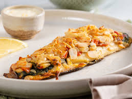
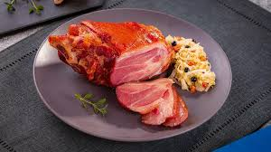
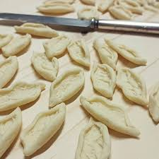
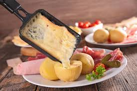

- Fondue
- Truta Grelhada
- Joelho de Porco
- Massas Artesanais
- Raclette
Prato suíço muito consumido no inverno.

eixe típico das águas frias da serra.

Prato tradicional da culinária alemã.

Herança da imigração italiana.

Queijo derretido servido com acompanhamentos.